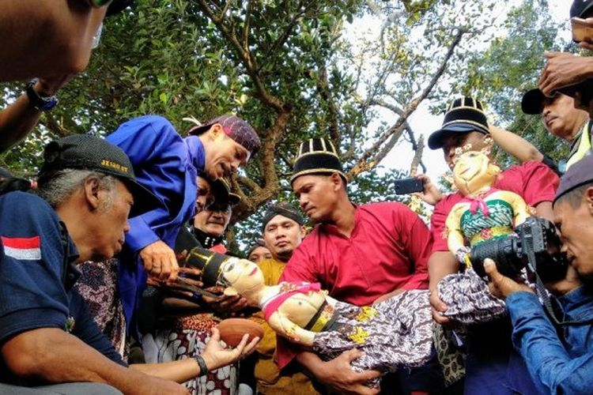
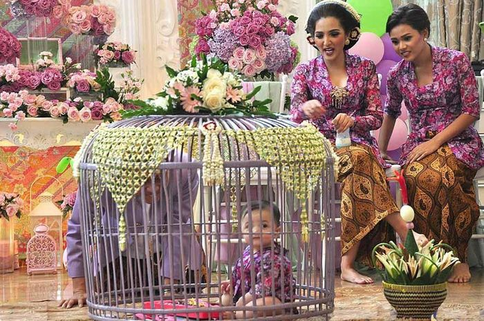
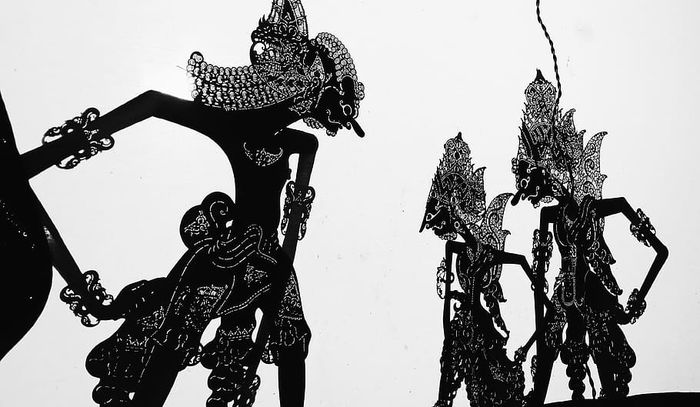

Provinsi Daerah Istimewa Yogyakarta (DIY) memiliki kebudayaan yang kaya dan beragam, mencerminkan sejarah panjang serta keberagaman etnisnya. Salah satu kesenian tradisional yang
terkenal adalah Wayang Kulit, yang melibatkan pertunjukan bayangan boneka kulit yang diproyeksikan pada layar, sering diiringi dengan musik gamelan dan narasi oleh dalang. Seni tari Bedhaya juga merupakan
bagian penting dari budaya Yogyakarta, ditampilkan dalam acara-acara adat dengan gerakan lembut dan anggun yang mengisahkan legenda atau mitos lokal. Selain itu, Pencak Silat, seni bela diri tradisional,
menjadi bagian integral dari upacara adat dan kehidupan sehari-hari masyarakat. Instrumen musik tradisional seperti Gamelan, yang terdiri dari berbagai instrumen perunggu dan kayu, sering dimainkan dalam
kelompok untuk menghasilkan melodi khas pada berbagai acara budaya. Upacara adat Sekaten, sebuah perayaan maulid Nabi Muhammad yang dilakukan oleh masyarakat, melibatkan berbagai ritual, tarian, dan doa
untuk kesejahteraan. Arsitektur Keraton Yogyakarta juga menunjukkan kekhasan budaya lokal, dengan bangunan yang dihiasi ornamen tradisional dan simbol-simbol kerajaan. Selain itu, tradisi lisan Macapat,
yang terdiri dari sajak-sajak berirama, sering digunakan dalam berbagai acara sebagai bentuk komunikasi dan hiburan yang sarat makna dan pesan moral. Semua elemen ini mencerminkan kekayaan dan keanekaragaman
tradisi lokal yang terus dijaga dan dilestarikan oleh masyarakat Yogyakarta.
Adat Istiadat

1. Separan Bekakak
Bekakak artinya korban penyembelihan hewan atau manusia. Dalam upacara adat ini, bekakak hanya berupa tiruan manusia saja yang aslinya merupakan boneka pengantin dengan posisi duduk
bersila dan terbuat dari tepung ketan. Sesuai namanya, upacara Saparan Bekakak dilakukan pada saat bulan Safar.
Tradisi

1. Tedhak siten
Tradisi ini adalah upacara turun tanah bagi anak yang berusia tujuh atau delapan bulan. Tedhak Siten bertujuan untuk memperkenalkan
anak kepada bumi dan memohon keselamatan serta kemudahan rejeki untuk sang anak.
Seni

1. Wayang Kulit
Wayang Kulit adalah seni pertunjukan boneka bayangan yang dimainkan oleh seorang dalang di belakang layar yang
diterangi lampu. Boneka-boneka kulit diproyeksikan ke layar, dan cerita-cerita dari epik Ramayana dan Mahabharata sering
menjadi tema utama.
Bahasa
1. Bahasa Jawa
Bahasa Jawa adalah bahasa sehari-hari yang paling umum digunakan oleh penduduk Yogyakarta. Bahasa ini memiliki
tingkatan atau strata yang berbeda tergantung pada konteks dan hubungan sosial antara pembicara dan pendengar.
Nilai-Nilai Budaya
1. Keraton dan Kerajaan
Keraton Yogyakarta merupakan pusat budaya dan kekuasaan yang memegang peranan penting dalam menjaga tradisi
dan nilai-nilai budaya. Keraton menjadi simbol kebesaran dan keagungan budaya Jawa.